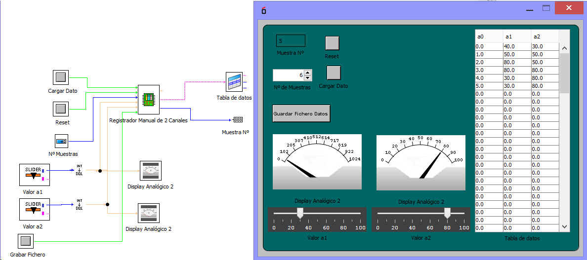

El registrado guarda dos canales de datos en un fichero.
Las entradas son:
Cargar Dato: Orden que guarad dato en la tabla
Reset: Reset
nºde Datos a registrar
Canal 1: valor del canal 1 a1
Canal 2: valor del canal 2 a2
grabar fichero: Orden para grabar el fcihero con los datos
Montaje:
